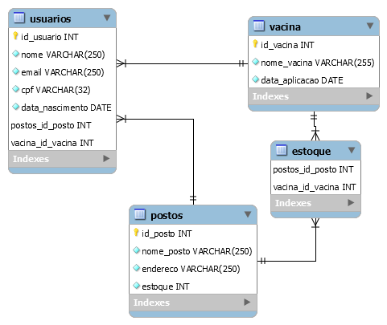
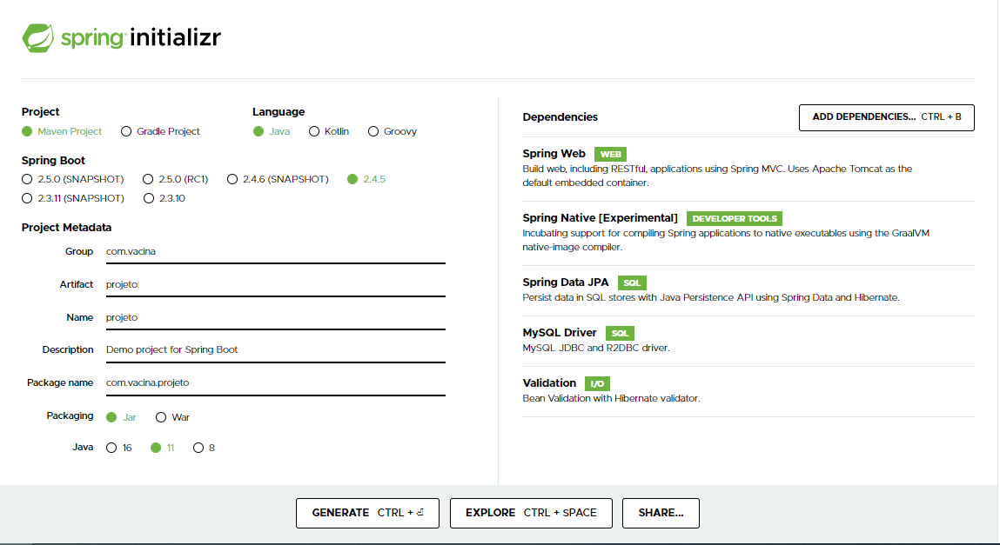
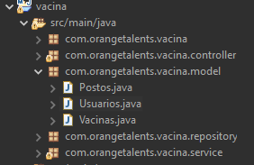
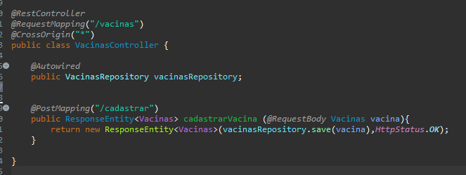
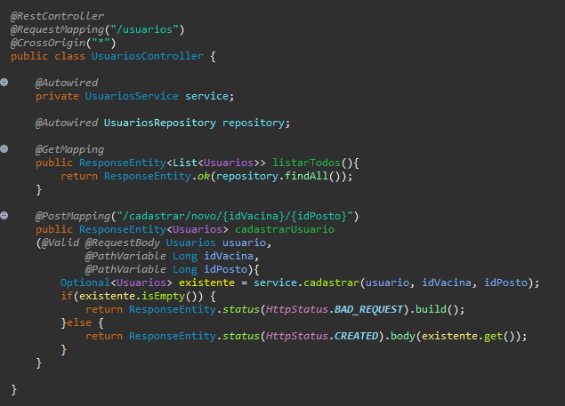
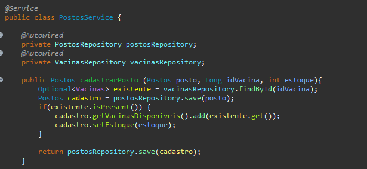
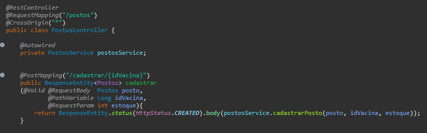

Vamos lá!
Primeiramente, é importante visualizar quais dados queremos e julgamos importantes para esse sistema de cadastros. O objetivo é fazer um cadastramento de vacinas, postos de saúde e usuários.
Vamos começar construindo um diagrama para visualizar as informações e relações entre as entidades:
*obs. Estou usando o banco de dados MySQL

Aqui visualizamos todas as tabelas do nosso sistema e as relações que faremos entre elas.
Um mesmo tipo de vacina poderá ser aplicada em vários usuários(relação muitos pra um). Mas cada
usuário, tomará uma única vacina(relação um pra muitos)
E cada usuário será direcionado a um dos postos disponíveis(relação muitos pra um), sendo que cada
posto poderá receber vários usuários(um pra muitos)
-sem aglomeração 😄.
Por sua vez, os postos podem receber diversos tipos de vacinas; e esses diversos tipos de vacinas também
poderão
estar em vários postos(relação muitos pra muitos).
Isso é importante para fazermos as relações entre as entidades.
O próximo passo será baixar nosso projeto Spring no Spring Initializr. Para acessar, é só clicar na barrinha de menu aqui da página. ↖
As dependências que vamos usar neste projeto são:
Baixado e descompactado o arquivo, vou importá-lo pra minha IDE (no caso estou utilizando o Eclipse)
Vamos começar criando nossas Models, que abrigarão nossas entidades(tabelas).
Dentro do projeto, em 'src/main/java', crie um package 'Models'.
O caminho será
sempre o mesmo para todos os
outros tipos de classes que vamos criar
Para criação das models, precisamos sempre ter em mente nosso diagrama. Pois ele será a base para a criação dos nossos atributos e dos relacionamentos entre as entidades. Criamos cada model com seus atributos e as notações de cada relação. O que no banco é representado pelas chaves estrangeiras, aqui é representado pelas notações @OneToMany, @ManyToOne e @ManyToMany.
Na classe Vacinas, a relação com Postos do tipo @ManyToMany. E a relação com Usuários do tipo @OneToMany. A notação 'mappedBy' serve para mapear o respectivo atributo na classe correspondente.
Na classe Usuarios a relação com Vacinas e Postos do tipo @OneToMany
Em Postos, a relação com Usuarios do tipo @OneToMany. Vamos nos atentar à relação com Vacinas. Aqui, a relação gera uma nova tabela (decidi chamar de estoque) que abrigará os IDs das duas classes, fazendo a junção das entidades e retornando a relação quando consultada.
Nosso objetivo é criar três tipos de cadastro: vacinas, postos e usuários.
Para isso, vamos criar as classes controller para inserir os end-points.
As classes controller, precisam receber a injeção de dependência do JPA. Para isso, vamos
criar interfaces do tipo Repository para estender a JPA. Assim:
O mesmo deve ser feito para Postos e Usuarios.
Agora, podemos fazer a injeção de dependência (com a notação @Autowired) no controller e criar nosso endpoint.

Foi criado um endpoint simples para cadastro (@Post), requerendo os dados da vacina no
corpo da requisição e retornando o status 201 created.
Para usuários, queremos assegurar que não exista mais de um cadastro para o mesmo
usuário, por isso, definiremos que o CPF e o e-mail devem ser únicos. E como faremos
isso?
Para deixar o código mais organizado, optei por fazer uma classe de service para
implementar essa regra de negócio.
Antes de partir para o service, vamos implementar dois métodos de busca no nosso
repositório, por email e por CPF:
Agora podemos definir nossa regra de negócio:

O Optional é uma boa ferramenta para ser utilizada nesse caso, pois ele fará uma verificação e retornará o dado solicitado. Através dele, vamos verificar se dentre os usuários, já há algum CPF ou e-mail iguais aos que estamos tentando cadastrar. Caso exista, o retorno será vazio e evitamos cadastro duplicado. Caso não exista, vamos salvar a nova requisição de usuário. Os usuários serão cadastrados associados à vacina que tomaram e ao posto onde esta foi aplicada. Sendo assim, faremos a verificação também de postos e vacinas. Caso a vacina e o posto estejam cadastrados, será feito um decréscimo no estoque. Também defini que a data de aplicação seja gerada automaticamente.
Nosso endpoint no controller ficará assim:
Caso haja tentativa de cadastro com dados já existentes, o retorno será 400 bad request. Caso seja um novo usuário, ele será cadastrado, retornando 201 created.
Resta criar o end-point para cadastramento de postos. Vamos começar criando nossa regra de negócio:
Aqui faremos uma verificação se existe cadastro da vacina informada. Caso positivo, será feito o cadastro do posto, 'setando' o estoque da vacina.
Nosso endpoint ficará assim:
Com esse sisteminha, já conseguimos fazer um cadastramento simples, porém funcional e integrado, de vacinas, postos e usuários. É possível pensar em inúmeras outras formas de incrementar esse sistema. Se tiver outras ideias, sugestões, comentários, dúvidas, escreva pra mim! 😉
Acesse o código fonte do projeto: 
E por falar em vacina, vamos à informações oficiais sobre a vacinação contra COVID-19!
Tire suas Dúvidas sobre a Vacina
Meu nome é Iara, mas pode me chamar de Iaiá. Sou uma constante aprendiz querendo descobrir o sentido da vida, do universo e tudo mais. Pra começar sou atriz de teatro, cantora, amante dos animais, vegana e cozinho muito bem! Minha motivação é resolver problemas e pensar em soluções criativas. Desenvolvedora FullStack Java Jr., sedenta por aprender e trocar com outras pessoas. A tecnologia se tornou uma nova paixão e quem sabe agora consigo chegar na resposta da grande pergunta inicial... Afinal, tudo começa com um:
public static void main(String[]
args){
System.out.println("Hello World!")}